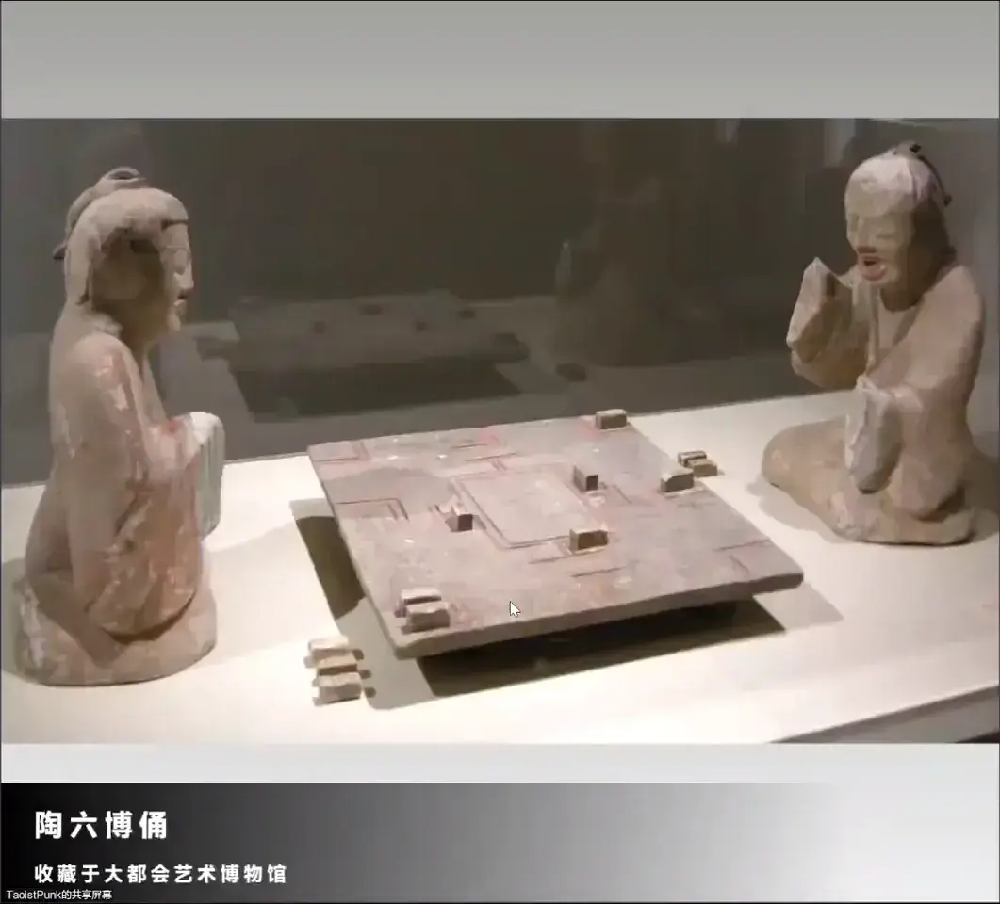
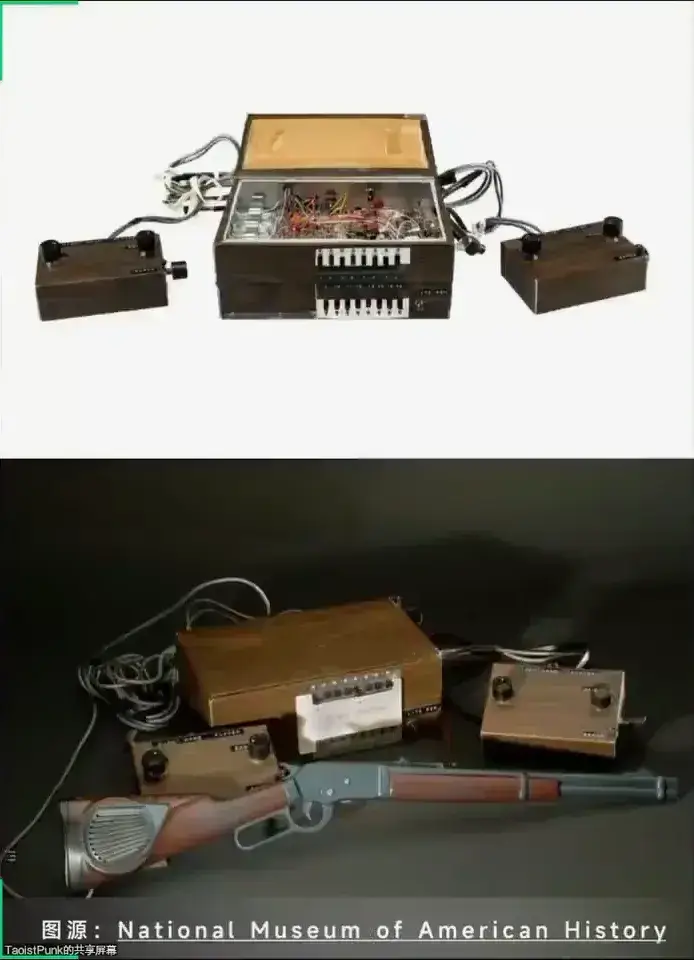

资源
正文
1
游戏史 学什么
- 听故事
- 游戏是什么？什么是游戏？
- 看真相
- 是什么推动了游戏的发展？
- 找归因
- 游戏的未来应该何去何从？
历史不是孤立静止的 历史是继承与发展的
| 以介质形态分 | 以社会形态分 | 以资本形态分 |
|---|---|---|
| 语言/运动/版图 | 传统游戏 | 北美雅达利时代 |
| 街机/主机/PC/移动 | 电子游戏 | 日本任天堂时代 |
传统游戏
- 赌博类
- 卡牌游戏
- 语言类
- 狼人杀
- 版图类
- 战略游戏
- 运动类
- 动作游戏
- 动物类
- 自走棋（由斗蛐蛐之类的游戏演变而来）
传统游戏源于人类的各种社会活动
生产 、生活、文化、政治、战争、……
尼斐尔泰丽
Nefertari（约 1290BC-1255BC）
古埃及新王国时期第十九王朝法老拉美西斯二世的大王后。她死后葬于尼罗河西岸底比斯以南的王后谷。 左为尼斐尔泰丽陵墓出土的壁画，这幅壁画展现了王后尼斐尔泰丽玩古埃及桌面游戏赛尼特的情景。
赛尼特
Senet（约 3100BC）
塞尼特，出现于古埃及前王朝时期，最早的考古实物是约前 31 世纪 ，是世界上已知最古老的双人版图游戏。 在新王国时代，赛尼特被认为是「卡」（古埃及人认为的灵魂）去往来世的过程。 赛尼特还通过贸易被传播到邻近的地区，比如以色列的 Arad，黎巴嫩的 Byblos，以及塞浦路斯境内。
乌尔王族局戏
Royal Game of Ur（约 2600BC）
乌尔王族局戏，又名廿格戏，是苏美文明的图版游戏。最早的考古实物是约公元前 2600 年的乌尔王族古墓，是非常古老的掷赛游戏。详细规则并不明，推测与古埃及的塞尼特相似。
恰图兰卡
Chaturanga（约 600BC）
恰图兰卡是古印度的一种象棋类游戏。该词在梵文 caturaṅga 是性状复合词，意为“有四肢或四部分”，在史诗中通常意为“军队”。起源于印度笈多时期的双人对弈棋类，历史可追溯到公元前五、六世纪的八条盘碁，也有四人版变体，而直系后代为泰卢固象棋，此游戏为部分象棋游戏的祖先。
波斯象棋
Shatranj（约 600 BC）
波斯象棋是六世纪霍斯劳一世时从印度的恰图兰卡传到波斯演化出来的。当时，印度人带恰图兰卡至波斯王宫，而波斯人之后也带波斯双陆去印度。是现代国际象棋的前身。
波斯象棋亦有深浅格的棋盘波斯象棋在阿拉伯世界普及开来之后，它的规则和棋子的名称依然与在波斯时一样，九世纪经由南欧传入欧洲。
赛鹅图
GAME OF Y GOOSE（约 16 世纪）
赛鹅图是一种出现于 16 世纪欧洲的棋盘游戏，被认为是后世赛车类桌面游戏的鼻祖。它一度在欧洲的民间和贵族都非常流行，而且无论成人还是孩子都是它的受众。该游戏的商业版本出现 1880~1890 年间。

六博
Liu Bo（战国时代）
六博在战国时期已经开始流行，与别名为格五的塞戏并称。湖北江陵、山东曲阜等地就发现有战国时期博局盘、博箸和棋子。
六博创制、流传年代久远，棋具和棋局结构复杂，走棋方式变化多样，彩点名目繁复。由于年代久远，记录玩法的书籍多已失传，只留只言片语。

蹴鞠
Cu Ju（战国时代）
蹴鞠是一种以脚击球的运动，相传最早是中国的黄帝为了训练士兵而发明，文字记载可以上溯至战国时代，大部分学者认为蹴鞠起源于战国的齐国（现今山东临淄），本为军训之用，进而演变为游戏。汉代名将卫青、霍去病率军驻守边疆时，曾闲时蹴鞠。至宋代，蹴鞠发展至繁盛。
击鞠
Ji Ju（东汉）
击鞠亦称打球或者击球，是东亚传统的马球，起源年代不详，但在汉魏时期开始有文字纪录，在唐代盛行，唐朝首都长安设有宽大的球场，唐玄宗和唐敬宗等皇帝均喜爱之。比赛双方各为 10 人，游戏者必须乘坐于马上以球杆击球，以击球入门来得分。
击鞠一词最早出现于曹植所著《名都篇》中。由此可以推断击鞠于东汉时期就已经出现。
曲水流觞
QuShuiLiuShang（魏晋）
曲水流觞源于上巳节这一古老风俗。上已指夏历三月的第一个已日。夏历的三月，人们坐在河渠两旁，在上流放置酒杯，酒杯顺流而下，停在谁的面前，谁就取杯饮 酒。这种游戏非常古老，逸诗有云:“羽觞随波泛”。
魏晋以后上已改为三月初三，成为一个重要节日，洗濯身体的风俗逐渐演化成临水宴客和郊外踏春，演变成流觞曲水。
升官图
ShengGuanTu（唐）
升官图又名选格、彩选格、选官图或百官铎，是中国传统的选格游戏，最早起源于唐朝。
升官图是一种依靠转动四面陀螺赌赛的图版游戏，参与者在一幅标志着各种官衔的图板上游戏，从白丁起始，依照转动陀螺获得的判语升迁贬黜，以最先升任最高官制者为胜。
游戏史与人类社会有关系密切
经济基础
生产力
生产关系
决定→
←反作用
上层建筑
文化 · 制度 · 国家
民族 · 种族· 宗族
阶层 · 阶级 · 地位
宗教 · 仪式 · 战争
影响→
←影响
游戏设计
一种特殊的上层建筑
慢慢长夜——机械式游戏机——18 世纪-20 世纪
亚历山大港的赫伦
Heron of Alexandria（约公元 1 世纪）
古希腊数学家、工程师、发明家。居住于公元 1 世纪罗马时期的埃及省亚历山大港。他的研究领域极广，包含数学、力学、气体力学等。他发明了有文字记载以来第一台蒸汽机、风轮、注射器等有趣的东西 。
圣水自动贩卖机
Holy Water Vending Machine（约公元 1 世纪）
在赫伦众多发明中，一种可以通过投入钱币进而向信徒自动倾注一杯圣水的机械让人眼前一亮。这个机器也被认为是世界上最早的自动贩卖机它也被认为是后世投币式游戏机投币原理的来源。
自动机
Automaton
自动机，又称自动机器、自动机械。
Automaton一词源于古希腊语 αὐτόματος 意为以自我意志动作。是指非电源供应，以发条装置作为动力来源，使自己运作的机器。
自动机必须先手动上紧发条，发条带动机器内部的齿轮及随动机械零件，才能自己运作，发条的能量就像蓄电池一样消耗，必须再上紧发条。
投币式自动机
Coin Operated Automaton
一种将投币装置和自动机结合起来的机器。自动机往往包含了一种动态的造景，例如左图的《火车头》、《电即生活》、《完美肌肉锻炼》。
这种投币式自动机完成了投币式机器的商业化进程，并且拜托了仅仅对物质需求满足的消费，转而关注精神需求领域：投币仅仅是为了观赏机械运动或者娱乐消遣。
投币式自动机被认为是现代电子游戏中，街机游戏的最早形态。
赌博机
Gambling Machine
1891 年，美国布鲁克林的斯特曼和皮特公司（Sittman & Pitt）制造了世界上第一台老虎机。很快，老虎机就席卷了全美的娱乐场所。很多酒吧、赌场、沙龙都放置有老虎机以供游客们娱乐。
20 世纪初，美国政府注意到老虎机的赌博性质，为了防止人们沉迷老虎机而家破人亡，一些州政府颁布了禁止销售、运输、摆放老虎机的禁令。很快这种禁令又被从业者以一些“奇妙”的手段规避。
弹球游戏
Pin Ball Game
由一些棒球类体育模 拟游 戏 改 进 而 来 的 弹 球 游戏，在 1871 年由美国人蒙塔古 · 雷德格雷夫（Montague Redgrave）发明问世。
随后的一百多年里，弹球类游戏经久不衰。特别是在日本，现在发展为被称作柏青哥（パチンコ）的具有地域性文化特色的游戏。
和老虎机一样，弹球游戏也经历了从普通游戏到赌博游戏再到灰色地带游戏的过程。某种程度上也是电子游戏发展史的见证。
破晓时刻——数字式游戏机与实验电子游戏——1910s-1960s
按照动力和电路类型划分
- 资产阶级革命——传统机械式游戏机
- 二次工业革命——电动机械式游戏机
- 两次世界大战——数字机械式游戏机
- 信息技术革命——计算机视频游戏机
棋手
El Ajedrecista
棋手是西班牙马德里的莱昂纳多·托雷斯 · 柯维多与 1912 年发明的自动机。棋手整个装置有可以进行移动计算的计算元件，既可以计算如何落子更有优势，也可以判断人类玩家落子是否符合规则，以防止玩家作弊。
棋手被认为史上第一台电脑游戏（Computer Game）。（具有一定的人工智能）
双人网球
Tennis for Two
1958 年，纽约布鲁克海文国家实验室赞助了一年一度的“游客日”活动，旨在向公众打开了解科学的大门，鼓励年轻人投身科技事业。美国物理学家威利 · 希金波坦在示波器上只做了一款可以玩的体育模拟类游戏：双人网球。
双人网球被认为是史上第一款通过动态图像显示在屏幕上的电子游戏。而且双人网球有一对可以操 作的按钮，也被认为是现代电子游戏手柄这一设计的来源。
双人网球展出之时引起了相当多的关注，但因为其并未商业化，所以影响力依然有限。
太空战争！
Space War!
1962 年，史蒂芬·罗素与马丁 · 格雷茨、韦恩维塔宁、鲍勃·桑德斯、彼得 · 参孙等人合作开发了一款太空战争题材的电子游戏。这款游戏被命名为《太空战争！》。
最初，他们在麻省理工学院用 PDP-1 型电脑作为开发设备，用汇编语言编写代码，后来不断改良，并散布到更多 PDP-1 设备上，使之成为第款 可复制获取的电子游戏。
太空战争！的影响力相当打，人们除了将其广泛地接触并游玩以外，还开始大量的移植操作。这款游戏对后世游戏的启发相当大。
日出之时——商业化：街机与家用机之争——1970s
家用机与街机历史渊源的不同
- 传统桌面游戏 — 游戏电子化 -→ 家用机
- 实验室计算机 — 电子设备游戏化 -→ 街机
拉夫 · 贝尔
Rudolf Heinrich Baer（1922 年 3 月 8 日-2014 年 12 月 6 日）
Space War!
拉夫 · 贝尔于 1922 年出生于一个德国的犹太裔家庭。14 岁时由于纳粹德国实施反犹太法，他被学校开除。1938 年 9 月，贝尔一家人担心遭到纳粹的迫害，于是离开德国，搬到纽约。11 月德国爆发水晶之夜事件，大量犹太人遭到屠杀。
到了美国，拉夫 · 贝尔在一家工厂工作，后来入学于国家无线电学院。1943 年应征入伍参加第二次世界大战，被分配到伦敦的美国陆军的情报部门。1946 年退伍后，他又加入美国电视技术学院学习，最终成为了一名电视工程师。1956 年，他加入美国国防承包桑德斯协会。

棕盒子
Brown Box（1967 年）
Space War!
1966 年，身为桑德斯协会设备设计部门的负责人的拉夫 · 贝尔，在制作设计一台电视的时候，突发奇想，提出用电视机来玩游戏的概念。于是他提出了一份名为 GameBox 的提案。随后，他团队工程师们开始了设计制。同年 12 月，他们完成了这款游戏机的原型——棕盒子，也叫 TV Game。
1967 年起，在后来接下来的 5 年时间里，贝尔不断地改进这台游戏机，并给它增加了好几个游戏（包括一个乒乓游戏）。但是由于当时市场上并没有游戏机，所以没有公司愿意投产这台设备。
米罗华 奥德赛
Magnavox Odyssey（1972 年）
经历了长达 4 年的财务问题、型号改进，最终在 1971 年，米罗华公司决定投资并生产这台设备，并签署协议。这台机器最终经历了重新设计，使之更具有设计感，并最终定名为米罗华奥德赛。该主机于 1972 年 9 月想经销商和媒体展示，包含 28 款游戏。
由于一些列在电子游戏领域开创性的创造，拉夫贝尔被称为电子游戏之父。2006 年 2 月，拉夫贝尔被授予美国国家技术奖章。2014 年 12 月 6 日，拉夫 · 贝尔在新罕布什尔州曼彻斯特的家中去世。
诺兰 · 布什内尔
Nolan Key Bushnell（1943 年 2 月 5 日-）
布什内尔于 1943 年出生于犹他州克利尔菲尔德的一个中产阶级家庭。于 1961 年进入犹他州立大学学习工程学，后来学习商业。1964 年，他转到犹他大学工程学院，获得电气工程学士学位 。
布什内尔在上大学期间在 Lagoon 游乐园工作多年。在工作 2 个季度后，他就被任命为游戏部门的经理。在此期间，他熟悉了电动机械式游戏机，了解其工作原理，这段时间增进了他对游戏业务的理解。
电脑太空战
Computer Space（1971 年）
1969 年，布什内尔与小塞缪尔·达布尼（Samuel Frederick Dabney Jr.，1937 年 5 月 2 日-2018 年 5 月 26 日）联合创立了 Syzygy 公司，旨在生产一款类似太空大战！的投币式游戏机。达布尼负责制造机器原型，布什内尔负责寻找制造商和谈论和做事宜。最终，Nutting Associates 决定生产这台机器。最终这台机器被销售了 1300~1500 台，尽管并不能算巨大的商业成功，但二人依然坚信这将会是一种颠覆性的娱乐方式，于 1972 年 6 月将 Syzygy 改称为雅达利。
乓
Pong（1972 年）
1972 年，布什内尔参观了米罗华奥德赛的演示，对其中一款网球类游戏非常感兴趣。但他认为米罗华奥德赛的网球游戏表现力不够好，自己能够设计出比它更出色的游戏。于是他找到工程师艾伦 · 奥尔康（Allan Alcorn，1948 年 1 月 1 日-），声称让他做个游戏练练手。
8 月，二人完成了这个游戏机的原型，并放置在当地的一家和自己关系相当好的酒吧里。结果几天 后游戏机便被报出“技术故障”。经过奥尔康排查后，发现竟然是机器里硬币过多溢出导致的。
由此引发了 ATARI 与 MAGNAVOX 的竞争。
1972 年至 1977 年 Pong 的成功与泛滥
PONG 由于其自身结构简单，在全球几大主要电子游戏市场被大量复制与销售，除了北美本地的制造商外，包括太东、世嘉、任天堂等日本本土的游戏机制造商。这也导致了市面上游戏品类单一，玩家容易厌倦的情况。于是，在 1977 年，游戏机的销售出现了停滞。于是在这几年因为热钱想要赚一笔的资本又迅速退出了游戏市场。
复制、模仿、创新：进化中的中国游戏产业
最近数年，我以研究中国游戏产业为开端，考察了作为日本游戏产业起点的任天堂 Famicom 的发展历程，以及其他国家和地区的游戏产业发展状况。我由此深切感受到，游戏产业和其他产业的发展有着类似之处，同样需要经历**复制（copy）、模仿（imitation）、创新（innovation）**三个阶段才能产生飞跃发展。包括游戏产业在内的多数产业在到达模仿、创新层次之前，都必须经历“复制”他国产品的阶段。即便是现在主张“独创性”的日本，在 20 世纪 70 年代后期市场上充斥的也都是 pong 和《打砖块》等游戏的复制作品。不过，日本那些著名游戏厂商的游戏开发基础，都是在这个“复制”阶段培育起来的。因此，对于中国的游戏产业而言，“复制”在一定时期内可以说是一种“必要之恶”。但是，如果不加控制，任其长期发展，盗版就成为整个市场的基色，进而阻碍市场和行业的长远发展。
——日本数字游戏学会副会长/中村彰宪
第二代家用机——卡带机革命
廉价的微处理器——MoS Technology 6502
MOS Technology 6502 是一款 8bit 微处理器，由 Chuck Peddle 领导的 MOS 技术小组设计。设计团队以前曾在摩托罗拉从事摩托罗拉 6800 项目；6502 本质上是该设计的简化，更便宜，更快的版本。
1975 年时，6502 是市场上最便宜的微处理器，售价低至 25 美元，它最初售价不到大公司竞争设计成本的六分之一。它的推出导致整个处理器市场的价格迅速下降。与 Zil0g280 一起，它引发了一系列商业变化，并最终掀起了 1980 年代初的家用电脑革命，
卡盒式只读存储器——Read-Only Memor Cartridgey
20 世纪 70 年代，随着存储介质的发展，出现了可移动、可编程、可插拔的存储介质。有了这种提前把需要的程序写在存储介质、不必将其写在高速但却昂贵的随机存储器（Random-access memory，RAM，即内存）里。这种存储介质在后来的家用游戏机领域大放光彩。
游戏卡盒+微处理器=？
仙童 频道 F
Fairchild ChannelF（1976 年）
仙童半导体是美国一家半导体制品的公司。起初仙童是为美军制造间谍卫星，后来该公司进入民用领域。1957 年，八名半导体工程师离开肖克利半导体实验室，与仙童合作成立了仙童半导体。仙童半导体一跃成为半导体行业领军人物后来这家公司孵化了诸如英特尔、AMD 等数十家全球半导体巨头。
1976 年 11 月，仙童推出了全世界第一款基于微处理器并使用 ROM 卡带的游戏机。该设计使过去、专用型家用机迅速被市场淘汰。
雅达利与华纳通讯
Atari and WarnerMedia
1975 年，雅达利正在开发雅达利 2600 原型机。但雅达利不得不面对米罗华的诉讼与资金短缺诸多问题。最终，在1976 年，雅达利将公司以 2800 万美金的价格出售给了华纳通讯公司。后者相当欣赏雅达利 2600 的市场前景，并为雅达利继续追加了 1.2 亿美元的开发投资。雅达利一时风光无两，并成功开发出了雅达利 2600 的正式型号，最终于 1977 年 9 月发布。（雅达利获得了大量资本）
雅达利 2600
Atari 2600（1977 年）
雅达利 2600 最初被叫做雅达利计算机系统（Atari Computer System，教程 Atari VCS）。和仙童频道 F 一样，雅达利 2600 同样使用了微处理器与 ROM 卡带。
尽管诞生时间比频道 F 更晚，但是 **Atari 在游戏阵容上更注重对街机游戏的移植。**而卡带诞生的同时也催生了一部分专门从事生产游戏软件而非硬件的公司：第三方厂商由此诞生。于是，雅达利 2600 的游戏阵容主要由第一方游戏、街机移植游戏和第三方原创游戏组成。
1980 年，雅达利获得 Taito 的许可，开始向雅达利 2600 移植太空侵略者。3 月，太空侵略者家用机版发布，迅速让雅达利游戏机的销量在当年翻了整整一倍，1981 年则翻了 2 倍。
于是，随着太空侵略者、吃豆人等游戏的成功雅达利意识到家用机游戏产品不能仅仅依赖 Pong 和一些自己开发的少量的第一方游戏。在那个时代：
“街机才是 3A”
xychart-beta
title "雅达利 2600 销量 1977-1982 年"
x-axis [1977, 1978, 1979, 1980, 1981, 1982]
y-axis "Value" 0 --> 1200
bar [35, 55, 100, 200, 600, 1000]
太空侵略者
Space Invaders（1978 年）
太空侵略者被认为是业界第一款飞行射击游戏。他的设计师西角友宏为了呈现出在当时来说极其复杂的动态画面和音效，选用了当时最新的英特尔 8080 处理器、德州仪器的 SN76477 声音芯片。最终，高速画面和彩色效果让当时的玩家耳目一新，优秀的玩法更是让玩家爱不释手。很快，太空侵略者就爆火了全日本。
1978 年底，太空侵略者的开发商 Taito 已经生产了超过 10 万台太空侵略者的街机，而仅仅半年后，这个数字又翻了一倍多。但即使如此，市场上对太空侵略者的需求仍然是供不应求。
为了应对巨量的市场需求，Taito 不得不开始委托海外的街机制造商，并开始授权海外版太空侵略者的销售。很快，太空侵略者就在全球游戏市场爆火。一度有美国的民族主义者称太空侵 略 者为“来自日本的侵略”。
截止 1979 年底，全球太空侵略者的装机量打到了 75 万台。太空侵略者为 Taito 赚取了超过 5 亿美元的利润（相当于 2021 年的 21 亿美元）太空侵略者一举改变了游戏市场对 Pong 的抄袭山寨横行的局面，同时也极大鼓舞了日本本土的游戏产业的信心。
一款游戏机成功的因素是什么？
2
黄金时代与崩溃危机——街机 · 家用机 · 个人电脑——1980-1983
系统性游戏设计理念的出现——游戏多元化和复杂化的必然结果
90 秒原则——街机游戏单局时长的设计范式
- 节奏更快
- 难度更大
- 内容限制

吃豆人
PAC-MAN（1980 年）
作为 20 世纪 80 年代的流行文化的代表元素，吃豆人在世界的电子游戏历史上有着浓墨重彩的一笔。1980 年 5 月 22 日，由岩谷主导设计、南梦宫出版发行。
- 角色形象
- 女性可玩
- 敌人设计
- 必要休息
| 鬼 | 日文名 | 英文名 | AI 特性 |
|---|---|---|---|
| 红 | オイカケ アカベイ | SHADOW BLINKY | 追踪 PacMan 身后的点位 |
| 黄 | マチプセ ピンキ一 | SPEEDY PINKY | 预测 PacMan 前进的点位 |
| 粉 | キマグレ アオスケ | BASHFUL INKY | 红鬼与玩家的对称点位 |
| 蓝 | オトボケ グズタ | POKEY CLYDE | 远追近逃 |
これでは女性が入りプらいのではないか
这样的话会不会让女性参与游戏呢
——岩谷徹
食べる
-
只用四个方向键
-
休息时间的引入
-
角色用彩色表示
吃豆人开始的职种分化
- 企划 岩谷徹
- 硬件 石村繁
- 编程 舟木茂雄
- 音效 石村繁一 · 甲斐敏夫
吃豆人的后世影响
- 用户向主导的商业设计
- 生产向主导的创作分工
吃豆人与太空侵略者标志着日本的游戏资本对北美游戏市场反攻开始。
第三方的发展与危机——卡带机所决定的必然历史进程
| 街机模式 | 家用机模式 |
|---|---|
| 诺兰 · 布什内尔 | 雷蒙德 · 卡萨尔 |
| 老雅达利派 · 技术生产力 | 金融资本 · 新华纳派 |
| 专注游戏品质 | 专注游戏宣传 |
| 面向商务合作 | 面向零售流通 |
街机模式的游戏更注重游戏质量，而家用机模式往往只想着挣快钱，忽视游戏质量。
1979 雅达利离职潮（资本选择了家用机模式而不是街机模式）
- 诺兰 · 布什内尔被撤职
- 雅达利的部分 老程序员被裁员
雅达利员工离职后成立了自己的公司
- 以大卫 · 克莱恩为首的人创立了动视
- 以鲍勃 · 弗洛普为首的人创立了梦想
第三方游戏厂商出现——1980~1982 年
ATARI vs ACTIVISION 打官司，ATARI 输了，从此第三方游戏合法化。
1982 年雅达利平台赖以生存的游戏阵容
- 第一方游戏
- 如果游戏厂商和主机厂商有从属关系，或者有相同的母公司等，那么这家游戏厂商就是该主机平台的第一方游戏厂商。
- 街机移植游戏
- 第三方游戏
- 如果游戏厂商和主机厂商没有从属关系，可以自主开发乃至发行游戏、不受主机厂商控制，那这家厂商就是第三方游戏厂商。
当时美国第三方游戏泛滥，“游戏小作坊”导致游戏质量下降。
雅达利大崩溃——资本主义历史周期下的必然崩溃
吃豆人 2600 版
Pac-Man（Atari 2600）（1982 年）
移植了无数街机游戏并大获成功的雅达利，自然不会放过吃豆人这块肥肉。虽然玩法和街机版并无二致，但是游戏本身的视觉和听觉效果让人大跌眼镜。和色彩丰富的街机版相比，雅达利版本的吃豆人移植和原版的差别过大导致玩家端的口碑大跌，有的玩家抱怨它和原版几乎没有相似之处。
尽管口碑不佳，甚至被一些人称为世上最糟糕的视频游戏之一，但吃豆人 2600 版是雅达利 2600 平台上最畅销的游戏，其销量达到了惊人的 800 万份。（靠情怀狠赚一笔）
E.T. 外星人
E.T. the xtra-Terrestrial（1982 年）
1982 年 7 月，雅达利以 2000 万美元的授权金价格从华纳受众购得了 ET 外星人的游戏改编权，并找来程序员霍华德 · 沃肖，要求他在 5 个星期之内完成游戏开发，并且要在当年圣诞节上市冲击圣诞销量（赶工导致游戏质量不佳）。这一切看似荒唐无比的举动在雅达利高层看来是再正常不过的营销手段了。实事也似乎在印证他们的想法：即使粗制滥造如斯，ET 外星人依然取得了 260 万份傲人的销量成绩。（靠情怀赚钱）
但事实真的如此吗？
雅达利大崩溃——1983~1985 年
雅达利大崩溃几大误区
-
雅达利大崩溃是一夜之间完成的
-
大崩溃完全是由 ET 外星人导致的（不是根本原因）
-
大崩溃的罪魁祸首是雅达利公司
雅达利大崩溃的起点
- 1978~1980 年产业资本和金融资本的矛盾
- 1980~1983 年巨量资本涌入电子游戏市场
- 1983~1985 流通资本的压力无法合理排解
资本家通过剥削劳动者以获得生产资本和流通资本，将产品分配给消费者获得货币资本和符号价值，货币资本和符号价值将会影响生产资本和流通资本。
游戏开发者在开发出一款游戏时，由于流通渠道被垄断，往往需要发行商、平台商和流量商的帮助才能被消费者所熟知，发行商、平台商和流量商从中获取抽成。
商业资本急于将流量变现，忽视了生产资本的投入，引发危机。
产业资本和金融资本的矛盾
以雅达利元老们为代表的产业资本和以华纳通讯为代表的金融资本在游戏的资本周转路线上发生了严重分歧。金融资本为了更好地控制产业资本为其生产游戏产品，1978~1980 年间，以分化、裁员等方式，沉重地打击了产业资本的力量。这种趋势的影响一直延续到现在。
流通资本的压力
ET 的发售代表着第一方游戏的口碑崩溃，吃豆人的移植则代表街机移植的彻底崩坏，而第三方资本的过量涌入导致粗制滥造的第三方游戏井喷。玩家得到游戏后开始大量退款，一直依赖销售渠道流通资本的雅达利面临空前的资本信任危机。流通渠道无法再信任雅达利的“玩具”，纷纷开始拒绝和雅达利合作，不再销售雅达利的游戏卡带和游戏机。这种情况直到任天堂北美的到来才得到缓解。
资本是一把自私的双刃剑
-
其存在的目的只有增殖
-
其关心的只有周转速度 · 规模 · 风险
-
其最终结局是消亡和危机，剩下的只是时间问题
3
大崩溃的后启示录——20 世纪 70-80 年代的游戏蹊径
20 世纪 70-80 年代的 PC 游戏
70 年代中末 PC 游戏发展分支
冒险游戏
- 反图形化——交互小说
- 图文结合——角色扮演
- 全图形化——模拟游戏
巨大洞穴探险
Colossal Cave Adventure（1975 年）
巨大洞穴探险也叫做冒险（Adventure）。它是一款基于文本的冒险游戏，玩家要去探索一个神秘的洞穴，寻找里面的宝藏，并成功带出洞穴。
最早的巨大洞穴探险由威廉 · 克劳塞开发。威廉是一位洞穴探险爱好者，游戏融入了洞穴探险运动和龙与地下城的元素。他将巨大洞穴探险开发完成后，上传到阿帕网（ARPANET，互联网的前身），被斯坦福大学的学生唐 · 伍兹发现，并且扩展和丰富了原游戏的内容和代码，并于 1977 年发布。
魔域
Zork（1977 年）
1977 年，麻省理工学院的提姆 · 安德森、马克布兰克、布鲁斯 · 丹尼尔斯、戴夫 · 莱布林受到巨大洞穴探险的启发，便准备开发一款超越巨大洞穴探险的游戏，魔域便诞生了。
相比于巨大洞穴探险，魔域有着更丰富的探索元素、更多的冒险机制和更强大的文本解析器。游戏丰富的内容为当时玩到游戏的玩家提 供 了很 强的沉浸感，因此在校内大受欢迎。
后来，开发者们成立了 Infocom 公司，并于 1980 年 12 月发行了面向 PC 平台的商业版本。后来继续又创作了魔域 2 和魔域 3。
高分辨率冒险
Hi-Res Adventure（1980 年）
高分辨率冒险是由罗伯特 · 威廉夫妇创立的公司在线系统（On-lineSystems）开发的游戏系列，全系列共 7 作，在 1980 年至 1983 年逐年推出。（图文结合）
- Hi-Res Adventure #0 - Mission Asteroid (1980)
- Hi-Res Adventure #1 - Mystery House (1980)
- Hi-Res Adventure #2 - Wizard and the Princess (1980)
- Hi-Res Adventure #3 - Cranston Manor (1981)
- Hi-Res Adventure #4 - Ulysses and the Golden Fleece (1981)
- Hi-Res Adventure #5 - Time Zone (1982)
- Hi-Res Adventure #6 - The Dark Crystal (1983)
高分辨率冒险
Hi-Res Adventure（1980 年）
玩家需要根据文本提示来解开一个个谜团。与 传统的交互小说不同的是，高分辨率冒险采用了大量简单的线条来向玩家传达空间的图像信息。这样不仅减少了冗长文本信息的阅读负担，还更直观地让玩家看到游戏里的空间样貌，增加了沉浸感。在游戏的第二代巫师与公主当中，还采用了彩色图像，让游戏的表现力更上一层楼。
巫术：疯狂领主的试验场
Wizardry: Proving Ground of the Mad Overlord（1981 年）
巫术：疯狂领主的试验场（下称巫术）室友罗伯特 · 伍德海德和安德鲁 · 格林伯格开发的角色扮演类游戏。该游戏是第一款系统性地把桌面角色扮演游戏龙与地下城的机制系统性地开发到 PC 平台的游戏。在严格意义上说，也算是第一款角色扮演类游戏。
在巫术中，和过往的冒险游戏不同，玩家可以操控 6 个角色组成队伍来进行探险。在机制上非常好地继承了龙与地下城的设计。其本身也因为独特的表现而收到欢迎，被一些人认为是后 来 RPG 的鼻祖。
飞行模拟器
Flight Simulator（1975 年）
1975 年 5 月，伊利诺伊大学的学生布鲁斯：阿特维克写了一篇名为《多功能计算机生成的动态飞行显示器》的论文。该论文该实处可以用当时的 6800 处理器运算处理飞行模拟所需要的图形信息。但在同年获得电器工程学学士学位毕业后，布鲁斯并没有成为一名工程师，而是在 1977 年成立了紫的公司子逻辑（Sublogic），随后用苹果 2 电脑开发了飞行模拟器并发行。据称飞行模拟器是苹果 2 上最畅销的游戏。不久之后，微软获得子逻辑的许可，并以微软版本的飞行模拟器发行，才有了此后的微软飞行模拟器。
（这个系列目前还存在）
日系资本的崛起——新时代序幕的开启——1983-1990
日本在这个时代经济飞涨，处于泡沫经济时代。
二战后日本经济
二战末期由于常年战争，日本经济濒临崩溃。1945 年，日本战败无条件投降，美国开始援助建设日本。五年后，朝鲜战争爆发，日本作为朝鲜战场的桥头堡，为美军提供了大量的物资，也在战争中让经济快速运转和恢复。50 至 60 年代，经历了数个“景气”的时期，日本的经济以年均 9% 的速率高速增长。1973 年石油危机爆发，日本经济陷入混乱，日本将制造业中心转移到半导体产业。1985 年，日本签订广场协议，开启了日本的泡沫经济时代。
任天堂
Nintendo（1889 年）
1889 年，山内房治郎在京都成立“任天堂骨牌”，开始生产“目式扑克牌”–花札。1902 年开始生产西式扑克牌。随后经历了山内积良、山内溥三代人经营，数次公司业务和名称的变更，1963 年正式改名为任天堂株式会社，开始跟随时代，制造一些电器、电子产品。
任天堂
Nintendo（1889 年）
1973，任天堂开始制造街机游戏，开发了「レ-ザ-クレ-射撃システム」。1975 年有推出了投币式街机竞速游戏「EVRレ-ス」。1977 年，任天堂推出了与三菱电机共同开发的一体式家用机 COLOR TV GAMES15 和 COLOR TV GAMES6。后来，直到 1980 年，任天堂都在持续退出类似的一体式家用机。同年，为了拓展北美业务，任天堂成立任天堂北美分公司。
任天堂
Nintendo（1889 年）
1980 年，任天堂发布便携式游戏机 GAME & WATCH。这种便携式游戏机采用了简单的液晶屏幕，在一个手掌大小的游戏机上玩庞一些规则简单的电子游戏。GAME & WATCH 并非是单一作品，从首作 BALL 1980 年发布开始，到 1991 年发布的最终作 MARIO THE JUGGLER，游戏共发布了 59 款，全球销量 4340 万个。
GAME & WATCH 也被认为是后来一众任天堂系掌机（GB 系列/DS 系列/NS系列）的前身或前代沿革。
米海尔 · 柯刚
Michael Kogan（1920-1984 年）
犹太裔乌克兰人，出生于 1920 年。1932 年为了躲避战乱，前往中国哈尔滨。之所以前往哈尔滨是因为当时日本占领中国东北，为了日本实行河豚计划，在国际上招纳饱受战乱之苦和纳粹迫害的犹太人定居到中国东北避难。
米海尔在哈尔滨结识了日本陆军情报部门的成员安江仙弘。米海尔也正是在此期间与安江仙弘结下了深厚的友谊。1939 年，安江仙弘安排米海尔前往赴日，前往早稻田商学院学习经济学课程。1944 年移居天津，并于 1950 年返回日本，定居东京。1950 年，安江仙弘病死于西伯利亚的劳改营，米海尔在 1954 年为其追办葬礼。
太東
Taito（1950 年）
定居东京后，米海尔投身日本的战后重建的大宗贸易行业，取“极东的犹太人”之意，成立了太東洋行公司，主要从事大宗贸易，主要向日本进口战 后重建所需要和短缺的各种 物资。
1972 年，太东改名タイト一，次年开始和世嘉一同代理 PONG 在日本的销售。78 年推出爆款游戏太空侵略者，太东一时风光无两。
直到现在，太东依然是日本线下街机厅的龙头企业。
标准游戏
Standard Games（1940 年）
1940 年，美国商人马丁 · 布罗姆利、欧文 · 布朗伯格和詹姆斯 · 亨伯特在夏威夷檀香山成立了标准游戏。他们的主要服务对象是夏威夷的美军驻军，向美军提供老虎机、投币式游戏机等各种娱乐机械。太平洋战争爆发，美国开始大量征兵，服役军人的增多让标准游戏公司的订单应接 不暇。战后，标准游戏公司被出售，创始人们重新创立了新的娱乐器械公司 ServiceGame，意为专门向美军提供娱乐服务的公司。
50年代，美国开始大规模禁止赌博机械，因此公司不得不把总部搬迁到日本，从而放弃了美国市场，于 1960 年解散。
世嘉
SEGA（1940 年）
搬迁到日本后，创始人马丁 · 布罗姆利创立了另外两家公司来接管 ServiceGame 的业务，即日本娱乐和日本机械制造。并取公司名字的首字母重新为公司命名，亦即 SEGA，世嘉。
中村製作所
Nakamura Manufacturing Company（1955 年）
1925 年，中村雅哉出生于一个资产阶级家庭。他的父亲经营着一家铁炮（即步枪）厂。1948 年从横滨工业专门学校毕业后，中村雅哉回想起童年在屋顶游乐场快乐玩耍的日子，于是开始了自己的事业。他于 1955 年成立了中村製作所，开始制造各种诸如旋转木马、投币式游戏机等屋顶游乐场的器械 。
1971 年，他根据中村製作所的英文名 NAkamura Manufacturing COmpany 的简称，取其首字母为公司英文化命名，改名 NAMCO，1977 年又改称ナムコ，中文译名南梦宫。
日本游戏产业的崛起原因
制造业重心向半导体产业转移为日本游戏产业的崛起提供了技术基础，战后经济的迅猛发展又给了日系资本发展奠定了原始积累。在进入 80 年代以前，日本就依靠代理、山寨等方式引入了大量的街机，并从事生产制造，又为游戏机的制造做好了工业准备。雅达利大崩溃造成了北美地区游戏产业前所未有的资本生态位空虚，日系资本趁此机会迅速崛起，占领了全球了游戏产业资本市场。
任天堂 Famicom
Family Computer（1983 年）
1982 年，依靠大金刚在街机市场大获成功的任天堂，开始思考下一步的商业计划。山内、上村雅之、横井军平充分讨论后，希望能开发一款“能够拥有巨大潜力、多样的接口的游戏机”，同时认同了一个理念：游戏机的生命力取决于游戏机所搭载的游戏软件。
时值当下，雅达利、康懋达、Coleco、卡西欧 MSX 等各路厂商都在尝试开发游戏机，竞争十分激烈。山内溥希望任天堂能够推出一款性能上击败所有对手，能让消费者无脑购入，但价格却不到一万日元的游戏机，再加上之前功能繁复的要求，这给任天堂带来了极强的挑战。
任天堂 Famicom
Family Computer（1983 年）
于是 FC 红自机诞生了。
FC 的开发理念
超高性能
为了提高游戏的表现力，任天堂开始使用 PPU，专门处理图形和色彩的信息。额外的一块芯片也给 CPU 减轻了负担，可以运算更复杂的游戏逻辑。内存方面也采用了更大的、远超雅达利 2600 的 RAM 。存储方面也采用了更大的卡带，容量是雅达利卡带的了 2 倍。在性能上的高追求让 FC 的游戏性能几乎能追平当时的街机，这也让街机游戏移植到 FC 上减轻了很多开发负担。
价格低廉
本体価格を 1 万円以下に抑元よ
——山内溥
简单易用
开发简易
FC 的开发机制不仅针对程序开发有优化，对于设计师也是大力支持支持。FC 为开发者提供了更优秀的图形、色彩性能，更大的图片和更高的分辨率，从而让设计师们可以更充分地发挥。
也正是因此，游戏美术逐渐走向精细化，游戏美术逐渐从游戏开发当中独立出来成为一个单独的工种。
任天堂的软件路径
- 游戏机本体不追求利润，赚钱主要依赖游戏软件
- ”仅仅是看看都就会觉得很有趣“
- 给卡带和游戏机加密 + 严格控制第三方的行为（检测到盗版卡带会直接锁机）
第一方 IP
在明确了“软件是硬件的生命根本”这一理念后任天堂开始了自己的品牌攻势。它将自己先前大火的街机大金刚的主角——一名穿着背带裤戴着红色帽子得大胡子水管工，以及大反派大金刚，分别做成自己不同游戏的主角，藉此诞生了世界最著名的 IP 形象之二：马里奥与大金刚。
在其后的开发中，不断地有新角色出现，加入了“任天堂 IP 宇宙”。诸如酷霸王、碧姬公主、路西易吉、卡比、萨姆斯 · 艾仁、林克、塞尔达、施慧等角色，它们都随着游戏的推出纷纷成为玩家最深刻的记忆。
第三方合作
任天堂有着近乎变态的第三方政策，这是一个非常复杂的问题。
首先是雅达利大崩溃给北美游戏市场带来的冲击，让任天堂警醒。如果不对第三方加以约束滥竽充数的作品会再度席卷市场。
其次是山内溥本人的性格以及任天堂作为资本主义市场经济下资本主体有密切联系。对于山内而言，不受掌控的人和事是不可接受的。其次，任天堂的称霸之路，快速发展是必须的。通过强制手段从第三方手里获取大量利润也是任天堂称霸计划的一部分。
任天堂的第三方政策，在历史发展过程中也在不断地变化，但是大体上还是能一窥究竟。
首先是所有的第三方必须且只能使用任天堂的卡带工厂来生产游戏卡带，并且需要计划好生产数量和时间，而且要等到生产线有排期的时候才能进行生产。
其次，所有的卡带需要根据定价按照一定的比例抽成给任天堂。任天堂几乎不用负担任何风险就能转到一大笔钱，这还不算第三方厂商与任天堂签约时候缴纳的授权金。
FC 红白机的销量
任天堂的举措评价
-
客观上，任天堂的一系列举措，即充分吸收了雅达利的教训，又适应了当下新时代下的消费主流，更提出了一些影响至今的设计、创新、营销的理念。
任天堂对第三方的严苛政策尽管在合作厂商和媒体的眼里往往是“不义的”、“刻薄的”、“霸道的”，但客观上却保证了 FC 主机上游戏的质量，这让消费者在购买游戏的时候不至于因为游戏质量问题而怨声载道，避免了雅达利大崩溃的再现。
-
社长山内溥对内部员工实行了强力的管控和压榨。任天堂的工程师们经常工作十几个小时，高强度工作让不少人疲惫不堪，与现在很多人听说的任天堂工作福利制度截然相反。此外，任天堂内部不论员工还是高管，都非常害怕来自山内溥的责问，甚至他的家人都不例外，足见其个人性格。
但同时，山内溥富有远见的思维又在客观上为任天堂的发展指出了方向。任天堂的高管们也经常认为“社长的想法让人信赖”。尽管山内的性格不招人喜欢但是出众的眼光和决断力又对任天堂产生了重要的影响。
-
山内溥在 1983 至 1991 年间，通过持续的盈利和不断强化任天堂对业界的控制力，一步步地巩固任天堂对整个产业界的控制力，他和他的团队试图把任天堂打造成一个游戏帝国，他们希望自己能够垄断整个行业的利润，以及控制整个行业的脉络。但历史总是不缺乏偶然，霸主也从来不缺乏挑战者。在任天堂的时代，也有着无数试图挑战和撼动任天堂霸主地位的挑战者们。
4
游戏主机世代
| 世代 | 时期 | 代表作 |
|---|---|---|
| 第 1 世代 | 1972-1980 | Magnavax Odyssey, Pong, Coleco Telstar（主要由桌游演变而来） |
| 第 2 世代 | 1976-1992 | Fairchild Channel F.Atari 2600 |
| 第 3 世代 | 1983-2003 | Nintendo Family Computer, Sega Master System, Atari 7800 |
| 第 4 世代 | 1987-2004 | PC-Engine, Sega Genesis, Super Nintendo Family Computer, Mega Driver |
| 第 5 世代 | 1993-2006 | Sega Saturn, PlayStation, Nintendo 64 |
| 第 6 世代 | 1998-2013 | Dreamcast, PlayStation 2, Nintendo GameCube, Microsoft Xbox |
| 第 7 世代 | 2005-2017 | Microsoft Xbox 360, PlayStation 3, Wii |
| 第 8 世代 | 2012-现在 | Wii U, PlayStation 4, Xbox One, Nintendo Switch |
| 第 9 世代 | 2020-现在 | Xbox Series / S, PlayStation 5 |
2000 年左右存在三个世代的重合。
任天堂的挑战者们
山内溥在 1983 至 1991 年间，通过持续的盈利和不断强化任天堂对业界的控制力，一步步地巩固任天堂对整个产业界的控制力，他和他的团队试图把任天堂打造成一个游戏帝国，他们希望自己能够垄断整个行业的利润，以及控制整个行业的脉络。但历史总是不缺乏偶然，霸主也从来不缺乏挑战者。在任天堂的时代，也有着无数试图挑战和撼动任天堂霸主地位的挑战者们。
世嘉 SG 系列
SEGA（1983 年）
世嘉原本是日本的街机大厂，但 1982 年其街机业务并不景气，于是世嘉决定进军个人电脑业务，研发并推出了个人电脑SC-3000，并同时退出了这款机器的游戏机版本 SG-1000。
在推出 2 年内，世嘉又分别研发了 SG-1000 的改进型号 SG-10001 和 SEGAMarklll。
世嘉 Master System
SEGA Master System（1985 年）
世嘉基于前几款家用游戏机的研发积累，在 Marklll 作为原型的基础上，世嘉以超越 Family Computer 为目标，开发出了全新的家用机 Sega Master System (SMS)。
任天堂娱乐系统
Nintendo Entertainment System（1985 年）
任天堂于 1985 年推出 FC 红白机的美版，其机体和卡带的外观和日版红白机完全不同，俗称“灰机”。NES 在北美市场发行后重新打开了北美电子游戏市场的销路，给经历了雅达利大崩溃后的北美电子游戏市场来了一次“心肺复苏”。
虽然这个时期任天堂仍占绝对优势，但世嘉在一些地区（欧洲、南美等）也获得了一定的销量积累。
PCE
PC Engine（1987 年）
早在 70 年代中期就加入电子游戏和个人电脑行业的哈德逊（Hudson Soft），于 1984 年成为最早加入任天堂签约第三方的厂商。1985 年其开发的《炸弹人》大获成功。
哈德逊在看见任天堂的成功后，也想要加入游戏主机的大战中，并找到了当时同样希望进入游戏市场但苦于无门的日本电器（NEC），双方展开合作 。
哈德逊开发了一款当时非常小巧的家用机，并且配备了自己研发的图形芯片。这款家用机即是 PC Engine。
PCE 从研发之初就考虑要“战未来”。哈德逊以 FC 的理念和结构为原点出发，在产品的技术密度上有着惊人的表现：PCE 的尺寸比市面上任何游戏机都要小得多，仅有 14 x 14 x 3.8cm。
除了亮眼的外观设计，PCE 在游戏性能和阵容上也不输 FC。《伊苏》系列、《桃太郎传说》《炸弹人》系列、《沙罗曼蛇》、《雷电》《三国志》、《女神转生》、《罗德斯岛战记》、《心跳回忆》等一种名作均有登陆和移植 PCE。虽说过高的配置导致 PCE 的售价相比于 FC 高出整整 10000 日元，但强大的游戏阵容和产品的亮点依然吸引了大量的玩家追捧。
PCE 的扩展
PC Engine（1987 年）
优秀的设计让 PCE 拿到了和 FC、SMS 等主流游戏机竞争的门票。而更早的发售时间让 PCE 取得了商业的先机。
PCE 的发行也打开了第四世代游戏机的大门。
产业发展的两条技术线
- 存储技术升级：玩家和开发商希望能使用更大容量的存储介质
- 运算性能提升：适应更复杂玩法逻辑和更精美图形的运算芯片
世嘉 Mega Drive
SEGA MD（1988 年）
世嘉在 1988 年推出了自己的四代机。在运算、图形、声音性能全面提升的情况下，世嘉也如同任天堂一样，在 1990 年打出了自己的吉祥物–刺猬索尼克，以此来在传播领域与任天堂的马里奥相抗衡。
正如索尼克在游戏中给人的印象那样：快速、震撼。世嘉 MD 在性能上甚至可以媲美当时的街机游戏。高性能带来的一大好处就是第三方厂商想要移植自家的街机大作到家用机上的障碍被大大减小了。此外，世嘉沿用了任天堂严苛第三方合作条约的同时，解除了对第三方游戏发行数量的限制，这为世嘉争取到了最重要的一批合作伙伴。
Game Boy
G B（1989 年）
1989 年，当哈德逊与世嘉正以不可阻挡之势蚕食家用机市场时，任天堂却迟迟没有发布下一代游戏主机。当玩家们焦虑地期待着任天堂的新产品时，任天堂却公布了一个令人意想不到的跨时代产品——GameBoy。

Game Pocket Computer
Epoch（1984 年）
实际上，早在 GB 之前，便携式游戏机就已经逐渐在开始流行，比如 Epoch 的 Game Pocket Computer。不过，因为电池续航、屏幕成本等原因，便携式游戏机一直都面临价格昂贵、耗电太快的问题。这些问题严重阻碍了便携式游戏机在市场的流通。
任天堂在开发 GB 时专门提出：便携式游戏机要达到和 FC 相当的性能，但成本不能超过 FC。在当时负责研发的横井军平没有选择更先进的彩色屏幕，而是更便宜、更省电的 4 灰度黑白屏。这一举措大大减轻了便携式游戏机的流通困难。
Super Famicom
SFC（1990 年）
1990 年 11 月，任天堂终于推出了自己的 4 世代 16bit 游戏机——Super Famicom。尽管在性能上相较于 FC 无疑有大幅提升，但是却不及 PCE 和 MD。尽管如此，SFC 依然取得了傲人的销售成绩，在这一平台上诞生的经典大作不胜枚举。除了任天堂第一方如《超级马力欧世界》、《塞尔达传说 众神的三角力量》、《塞尔达传说众神的三角力量》等之外，还有很多三方经典游戏《快打旋风》、《超次元地带》、《三国志》系列、《恶魔城》系列、《信长之野望》系列、《街头霸王》系列等。SFC 亦不失为一代经典机型。
| 产商 | 平台 | 世界范围销量 | 日本 |
|---|---|---|---|
| 任天堂 | SFC | 4910 万 | 1717 万 |
| 世嘉 | MD | 3432 万 | 358 万 |
| NEC、Hudson | PCE | 1000 万 | 750 万 |
霸权的松动
山内溥时代的任天堂对第三方有着近乎变态的苛刻。**即使日本游戏市场逐渐成熟、北美游戏市场重新恢复后，任天堂依然不愿意放松第三方的诸多限制。**不仅如此，任天堂在 FC 发行的早期签约合作的六大厂商，都因为早期支持FC的发行而获得了长期的发行特权。然而在和这些厂商续约的时候，任天堂拒绝再赋予其特权，例如南梦宫。**此时这些三方合作厂商纷纷对任天堂表达出强烈的不满。而恰在此时，PCE 和 MD 对那些第三方伸出橄榄枝，导致不少三方厂商纷纷倒戈。**尽管 SFC 时代，任天堂依然保持着市场保有量的优势，但是和其他场上的差距却在不断缩小。
同时，任天堂从 SFC 时代开始就表现出一种市场竞争的滞后性。无论是 SFC 还是后面的 N64 · NGC，任天堂始终都比竞争对手慢半拍，迟半年甚至一年才推出自己的次世代主机。这给了对手关键的喘息时机一一任何游戏主机在刚上市的时候都是最要咬紧牙关的时候。而任天堂的滞后性却给了竞争对手以反制空间，这个时间差已经让对手形成了稳固的游戏阵地，无论是第三方合作意愿还是游戏阵容，竞争对手们都有充足的空间来对付任天堂。后来任天堂在竞争赛道上差异化竞争，究竟是另辟蹊径还是无奈之举，已经不得而知。
存储介质革命
随着游戏的发展，玩家不再满足于简单的玩法堆砌组合，而是希望更多的关卡、更多的文本，这种需求就对游戏的存储介质有了更高的要求，毕竟更多的游戏内容就意味着更大的存储容器。卡带固然可以通过增加 ROM 芯片来增加容量，然而这也意味着成本的升。任天堂的卡带一度达到了 1 万日元，这让玩家和厂商都叫苦不迭。更廉价的大容量存储介质的研发需求已经迫在眉睫，厂商们纷纷把目光投向了 CD。
PCE 的拓展：CD-ROM²
PC-Engine CoreGrafx CD-ROM²（1988 年）
小巧的体积给了 PCE 本体的发展另一种可能：以 PCE 为核心，拓展周边外设，以此来增强游戏的性能和内容。1988 年，哈德逊推出了 PCE 的扩展机型 CD-ROM²。这是一个可以以比卡带更大容量的 CD 为游戏介质进行游戏的扩展平台方案。只要将 PCE 本体以“插件”的形式接入 CD-ROM²，PCE 就成为了一个拥有更多游戏内容存储的半次世代的游戏机。
PCE 以 CD-ROM² 率先打开了 CD 游戏机的大门吹响了五代机的前奏。
世嘉 MD 的升级
Mega-CD（1991 年）
1991 年，世嘉也在自己的四代机 MD 的基础上开发了外加附件 Mega-CD。然而当时厂商对于 CD 介质的游戏设计的探索并不成熟，大家并不知道多出来如此多的容量究竟应该用来做什么好，于是 Mega-CD 上一直缺乏优质的游戏阵容，这导致了 Mega-CD 的销售不温不火。
世嘉土星
SEGA Saturn（1994 年）
但这项技术的尝试显然是值得的。3 年后的 1994 年，世嘉推出了自己的 32bit 处理器并且带有 CD-ROM 的五代机——世嘉土星。
不仅如此，世嘉为了应对即将到来的 3D 游戏时代，专门为图形追加了一颗图形芯片，用于计算 3D 图像。优秀的性能和表现力让世嘉土星在日本上市之初获得了不俗的成绩。
任天堂与索尼恩怨纠葛
为了顺应时代的发展，任天堂也开始了自己的 CD 游戏机的计划。起初，这个计划是任天堂和索尼合作完成，由索尼完成 CD-ROM 的研发。然而索尼的野心却不止是当任天堂的附庸，它为这个新的产品赋予了全新的名字——PlayStation，并且打算单独控制产品的生产。任天堂意识到了这一点之后，秘密开始了和飞利浦的合作，并在索尼擅自公开 PlayStation 后，立刻公布了与飞利浦的关系。两家的关系突然陷入了水火不容的境地，分别开始指责对方的背叛。索尼最终决定：摆脱任天堂，自己独立开发游戏主机。
索尼 PS 初代
PlayStation（1994 年）
索尼在 1994 年杀入游戏行业，不仅一开始就面临和昔日霸主任天堂的正面对抗的局面，还要和后起之秀世嘉竞争。然而PS凭借自身及其优秀的游戏性能和优秀的开发架构，策反了不少对任天堂和世嘉积怨已久的三方厂商。在上市之初通过优秀的游戏阵容、适当的销售节奏和策略，迅速打开了游戏机的市场。而任天堂方面却迟迟没有推出自己下一代的游戏主机，这给了索尼相当长的喘息时间。此外，尽管在日本地区索尼落于世嘉的下风，然而**世嘉也在北美地区犯下了不少营销错误，给了 PS 可乘之机。**PS 藉此杀出血路，成为一代神机。
| 产商 | 平台 | 世界范围销量 | 日本 |
|---|---|---|---|
| 任天堂 | N64 | 3293 万 | 554 万 |
| 索尼 | PlayStation | 1 亿 2490 万 | 1750 万 |
| 世嘉 | SEGA Saturn | 950 万 | 590 万 |
Dreamcast
Sega DC（1998 年）
土星的损失导致了世嘉出现了财务困境。世嘉希望在下一代游戏机上能挽回逐渐失去的时长，于是早早地在 1998 年便推出了自己的游戏机 Dreamcast，意为传播梦想。然而天不遂人愿，由于芯片产能不足，Dreamcast 的生产根本跟不上市场的需求，早早地停止了预订。尽管上市后世嘉在努力恢复产能，但这依然无法挽回在土星世嘉停产了时代世嘉出现的巨额亏损。2001 年，Dreamcast，并且退出家用机市场，彻底结束了自己在家用机硬件上的旅途。
PlayStation 2
Sony PS2（2000 年）
相较于世嘉的惨淡，索尼 PS2 可谓是截然相反。2000 年发售时的销量超过了世嘉。尽管在接下来的半年里 PS2 的游戏阵容平平，但是随着几款重磅游戏的发行，PS2 开始大火。至今，PS2 依然保持着一项世界纪录：销量最高游戏主机。强大的性能、超强的阵容，让 PS2 成为一代神机。
NintendoGameCube
NGC（2001 年）
2001 年，任天堂终于退出了自己的新一代家用机 NGC。NGC 在性能上略超 PS2，而且任天堂在 N64 的惨败之下，反思了自己对第三方的政策，开始放宽三方的限制。然而任天堂依然想用介质垄断来控制第三方的脖子，在 NGC 上使用的是任天堂自家的 NGC 游戏光盘，而非通用的 CD 光盘。这让不少第三方厂商大为恼火。任天堂原本预期 NGC 会达到 5000 万销量，实际上在停产之前，NGC 只售出了 2174 万台。
Xbox
Microsoft Xbox（2001 年）
原本任天堂认为自己能够在性能上略胜索尼一筹，而自己的另一个对手世嘉已经奄奄一息。却没想到一艘来自美国的“黑船”拉响了汽笛。IT 业巨头微软涉足游戏产业，设计出了 XBOX。XBOX 不仅在性能上远超任天堂和索尼的主机，甚至把价格控制在了和索尼一样的 299 美元。尽管微软承认，这么做实际上会造成巨额亏损，事实上微软在 XBOX 上亏损了整整 19 亿美元。（先通过亏损抢占市场）但是背后强大的资本力量让 XBOX 不仅没有淡出市场，反而销量上有异常强悍的表现，而且对下一代主机的研发也很快就被提上日程。
| 产商 | 平台 | 世界范围销量 | 日本 |
|---|---|---|---|
| 任天堂 | NGC | 2174 万 | 402 万 |
| 索尼 | PlayStation2 | 1 亿 5000 万 | 2160 万 |
| 世嘉 | Dreamcast | 1060 万 | 245 万 |
| 微软 | XBOX | 2400 万 | 47 万 |
至此世嘉基本退出，任天堂，索尼、微软三分天下。且由于游戏机的发展，形成了技术壁垒，新的产商很难加入竞争。
独立游戏时代——离经叛道的力量
什么是独立游戏？
独立游戏的定义难题——目前没有一种被广泛接受的单一的独立游戏的定义方式。
财务独立
开发者/工作室/公司依靠自己的积蓄或众筹等渠道来支撑自己开发的资金运转。特别是未接受大公司的收购、融资。
主体独立
制作方是一个独立的组织，自己研发，自己发行，不受发行商牵制和干涉，保持主体独立性。
创作独立
不论开发者是否接受了资本的投资或者帮助，只要能保持创作独立也可以视为独立游戏。
独立精神
游戏开发和设计的理念必须要具有先锋性，富有突破现有设计范式甚至意识形态的创造力量。
组织形态
不能是任何以现有公司形态形成的开发组织，开发者只能是个人或者多人联合起来的工作室。
一些边缘案例
有一部分游戏看起来极像了独立游戏，却因为种种原因不被认为是独立游戏或者充满争议。
从历史发展的角度——是否可以把独立游戏看作一种社会运动而非商品类别？
从实验室游戏起源——20 世纪 70 年代以前
实验室游戏
Laboratory Game（20 世纪 50-70 年代）
在电子游戏产业出现以前，或者说，电子游戏以商品形式出现在流通市场以前，电子游戏几乎都是以“实验创作”的形式存在的。这些实验室游戏往往是探索性的尝试，创作目的甚至都不一定是要去“制作一款游戏”。例如《双人网球》、《太空战争》等。
70 年代初，电子游戏商业化进程开始，实验室游戏依然保留其状态，不断地在孵化和孕育一些新的游戏类型。如交互小说、飞行模拟等。
实验室游戏是基于一种特殊环境孕育的产物
尽管实验室游戏往往难以拥有和商业游戏相匹敌的游戏内容规，但在开发的局限性方面，实验室游戏往往可以不过多考虑成本-流通-受众-市场的问题，因此也拥有了更多实践的空间和可能性。而实验室游戏经过一定的实践探索后，可能会被资本发现其市场价值，进而把这种可能性转化成一种社会流通的现实。
共享软件——20 世纪 80-90 年代
卧室程序员
Bedroom Coders（20 世纪 80-90 年代）
20 世纪 80 年代，随着廉价的个人电脑普及，英国兴起了一种全新的职业：卧室程序员（Bedroom Coders）。在当时，由于英国没有像雅达利这样的游戏主机业务的巨头，英国的年轻人们不能像美国那样轻松接触到游戏设备和软件。取而代之的则是 PC 游戏。此时的英国也没有成熟的游戏大厂，于是个人开发者开始发光发热。这一形势使得整个 80-90 年代，英国的卧室程序员们开发出了大量的小型 PC 游戏。特别是 80 年代的英国游戏，具有相当强烈的小众艺术和实验性。而在随后的 90 年代，越来越多的个人开发者组建公司并蓬勃发展，逐渐形成一个产业。
共享软件
Shareware（20 世纪 80-90 年代）
1982 年，安德鲁·弗鲁格尔曼（Andrew Fluegelman）开发了一个名为 PC-Talk 的通讯软件。用户想要获取这个软件不需要找零售商购买，而是向弗鲁格尔曼本人邮寄一个格式化之后的 3.5 寸软盘，弗鲁格尔曼则会为邮寄者免费拷贝 PC-Talk 的软件。在使用过程中，如果用户愿意，可以自愿向弗鲁格尔曼捐赠 25 美元以表示感谢。弗鲁格尔曼则称这种销售形式是“一种经济学实验，而不是单纯的利他主义行为”。
不久之后，吉姆·克诺普夫（Jim Knopf）开发了一款数据库管理软件 PC-File，并将之称为用户支持软件（user-supported software）。
而后，鲍勃·华莱士（Bob Wallace）生开发出了一款文字处理软件 PC-Write，并正式将这种分销形式下的软件称之为共享软件。
共享软件区别于现在的开源软件，其源代码不一定是公开的。不过，共享软件最标志性的特征还是由卧室程序员开发后，直接向客户零售，而不经过任何的经销商和平台商。除了早期的邮寄外，还有电话、电子邮件的订购形式。共享软件也为英国的早期 PC 游戏找到了商业化的出路:当创作者没有资本做发行时，共享软件将是个不错的路子。
制作人风潮
Game Producer
对于共享软件软件而言，想要获得不错的销量，在当时来说最好的办法就是在报纸、杂志上购买广告位。但不同于北美地区对雅达利这个名称和它的LOGO的追捧，英国的卧室程序员通常没有品牌或者商标，因此他们更倾向于把自己的名字作为游戏品牌本身推广出去。而当时的软件零售商、发行商也乐于如此宣传。以至于甚至在当时出现了以吹捧制作人为核心的宣传套路。这也是后世在游戏宣传中喜欢把制作人推到前台作为买点的路径的起源。
共享软件的多种分销形式
| 中文名 | 英文名 | 特性 |
|---|---|---|
| 试用软件 | Trialware | 免费试用一段时间 |
| 免费增值 | Freemium | 游戏部分免费，后面收费（如 DLC） |
| 广告软件 | Adware | 靠广告盈利 |
| 残废软件 | Crippleware | 不给钱只获得残废版软件 |
| 捐赠软件 | Donationware | 希望通过玩家捐赠的方式盈利 |
| 唠叨软件 | Nagware | 不给钱就一直烦玩家 |
| 明信片软件 | Postcardware | 希望玩家能够给开发者寄明信片（这里讲者也表示不知道什么意思） |
共享软件与游戏
Shareware and Games（20 世纪 80-90 年代）
随着共享软件的流行，越来越多的游戏开发者加入到共享软件式游戏的开发中来。1993 年，约翰·卡马克（John Carmack）开发了《毁灭战士》（Doom），并以共享软件的形式免费公开了前 9 关。剩下的关卡需要以电子邮件的形式向开发者下单并购买。共享软件成了大多数没有资本白手起家的游戏开发者的第一选择。
英国游戏资本
Bedroom Coders（20 世纪 80-90 年代）
**随着 PC 性能的提升，游戏机能的上限越来越高游戏开发的难度和规模也越来越大，个人开发者在市场里逐渐显的力不从心，开始组成一些团队来完成游戏开发。**渐渐地，市场上就出现了大量的游戏开发公司。而随着世嘉、任天堂的家用机开始在英国传播，游戏设备也从家用电脑逐渐向家用游戏机过度，游戏开发的力量也逐渐向家用机转移，个人开发者的力量渐渐衰落。与此同时，个人开发者联盟也从古早的工作室转变成为公司。1995 年后，卧室程序员开始锐减，落单的个人开发者也从过去自由开发者转变成为雇佣劳动力。
共享软件游戏与独立游戏
英国不像北美，从一开始就有良好的融资环境，用以快速开拓游戏市场。而卧室程序员-共享软件的经济模式解决了英国游戏产业最初缺乏资本的市场状态，这种生产资料散布在个体生产者手中的零散生产的模式实际上就是后世独立游戏开发的原始形态。
然而，从本质上说，卧室程序员-共享软件的生产模式和过去的小手工业没有太大的区别。仅仅只是生产工具现代化了，但生产方式、生产关系没有现代化。所以，当大资本进入这个市场的时候，工业化的生产、流通方式就对原本脆弱的经济模式带来了降维打击。1995 年后英国的独立游戏发展萌芽就被迅速掐断。
数字分发与独立崛起——21 世纪初
独立游戏节
Independent Game Festival（1998 年）
1998 年，游戏开发者大会（Game Developers Conference, GDC）成立独立游戏节（Independent Game Festival, lGF），旨在鼓励独立的游戏开发者，促进独立游戏的发展。IGF 设立奖项用于表彰优秀的独立游戏，并让这些游戏进入发行商的视野当中，以让他们得到更好的发行资源，让更多人接触到独立游戏。
零钱游戏宣言
Scratchware Manifesto（2000 年）
2000 年，一位叫做 DesignerX 的人在败犬之家（Home of Underdogs）发表了一篇名为零钱游戏宣言（Scratchware Manifesto）的文章，极其尖锐地指出当时商业游戏设计在资本的控制下被束缚的现状，以及资本把游戏当作是敛财的货物剥削玩家、开发者的恶劣行径。毫不留情地表达出对当前所谓游戏产业的厌恶，并同批了索尼、世嘉、任天堂的游戏设计路径和审美，以及他们荒谬的高额签约金。他把矛头指向游戏业的垄断金融资本，把游戏公司比喻为硅血汗工厂。
让游戏行业去死吧！游戏万岁。
Death to the gaming industry! Long live games.
颤抖吧，红木城！革命的力量正在行进中。
Tremble, Redwood City! The forces of revolution are on the march.
- 对完全由我们创造事物完全的所有权。
- 对我们完全所有的事物的完全控制其创造性执行的权利。
- 对我们的创意资产的复制和格式有批准权。
- 对我们的创意资产的传播方式有批准权。
- 对我们自己和我们的创意资产在发行/出版商之间自由流动的权利。
- 有权在任何/所有商业交易中雇用法律顾问。
- 有权同时向一个以上的出版商提出创作计划。
- 有权从我们所有的创造性工作中获得的公正的利润和份额。
- 有权对与我们的创作相关的任何收入/支出进行全面和准确的核算
- 有权迅速和完整地将我们的艺术品按原样归还。
- 有权完全掌控我们的创意资产的许可。
- 有权批准对我们自己和我们的创意资产的所有/任何推广。
数字发行
Digital distribution（21 世纪初）
在互联网普及以前，几乎所有游戏都必须通过实体媒介流通。这种销售形势高度依赖实体分销网络，即生产商→发行商→经销商→零售商→消费者。层层网络的传递让游戏产业的利润被不断压缩，而消费者也要为此付出更多的金钱来购买游戏产品。
而在进入 21 世纪后，互联网大规模普及给了游戏发行业一种全新的可能性：数字发行。在早期时候，开发者会搭建一些网站来为用户提供下载，形成了最早的数字发行的形态。这种发行模式在完全资本运作化之后，就形成了数字发行产业。
Steam 的崛起
Valva（21 世纪初）
2004 年，维尔福（Valve）为了给自己开发的第一人称射击游戏《半衰期 2》添加实时更新、反作弊、反盗版功能，推出了 Steam 游戏平台。2005年，维尔福开始与第三方游戏厂商签约合作，允许他们在 Steam 平台发行游戏：
相比较于传统的发行方式，尽管互联网下载还没有完全成为主流，但是由于省去了中间的发行环节，数字发行的利润率更高，对与游戏研发上来说更具有吸引力。同时 Steam 也可以比传统的销售渠道更优惠的价格销售游戏，并且提供反作弊、反盗版服务，对于开发商、发行商、玩家，都是好事。
游戏引擎技术下沉
（21 世纪初）
在 2001 年，约翰 · 卡马克公开了 IdTech2 引擎的全部源代码，让 ID2 成为了一个完全开源的引擎。此后数年间，各大游戏引擎陆陆续续开源或向个人用户低价甚至免费开放使用。其中 GameMaker 提出要让用户更简单、快速掌握开发技巧，而将游戏开发大幅简化的理念。2009 年，Unity2.6 独立版开始免费。同年，虚幻引擎推出虚幻引擎了的对应的游戏开发工具包 Unreal Development Kit（即 UDK），免费开放下载。至此，市面上主流的游戏引擎都成为了个人开发者触手可及的便利工具，使得游戏开发成本进一步缩减。
洞窟物语
Cave Story（2004 年）
2004 年，日本游戏开发者天谷大辅利用 5 年业余时间，开发出一款画风复古的 2D 平台跳跃游戏《洞窟物语》，并在网络上免费发布。优秀的美术、故事和玩法以及完全免费的游戏本体让《洞窟物语》为人称道。洞窟物语被认为是最典型的独立游戏，因为它完全由一人开发，游戏内容富有创新性且足够优秀，并且对世界游戏产业有很大的影响力，不少开发者在《洞窟物语》上看到了希望，并投身到独立游戏开发当中。他也被不少人认为是 2000-2010 年间最具影响力的独立游戏。以《洞窟物语》为开端，现代独立游戏产业开发蓬勃发展。
独立游戏崛起
Rise of Indie Game（21 世纪 10 年代）
2007 年后，独立游戏的数量开始逐年猛增，来自世界各地的开发者投身到独立游戏开发中。其中以 2010 年前后的数作最具代表性：《时空幻》《超级食肉男孩》《地狱边境》《粘粘世界》等，标志着独立游戏时代的降临。这些游戏无不在玩法、故事、美术甚至意识形态上对过去的商业游戏有着极强的颠覆性。
独立启示录——21 世纪初
独立游戏的困境
（21 世纪 20 年代）
随着时间推移，独立游戏发展也陷入了困境。最广为业界诟病的便是独立游戏的可发现性（discoverability）。独立游戏厂商没有足够的宣发资金，它们在可发现性上远远不如有宣发资本保驾护航的 3A 游戏。而且独立游戏的数量每年都在增加，这反而让大部分独立游戏更加难以获取曝光度。大量的独立游戏因此而“赛博死亡”。此外，不少大资本借独立游戏的风口，投资子公司或在公司内部建立部门，对外将自己包装成一个独立游戏花制作组，实则有着大量的开发预算和宣传预算。种伪装的独立游戏工作室大行其道也更加挤兑了独立游戏本不多的生存空间。有学者将现在称之为独立启示录时代（Indiepocalypse）。
独立游戏运动
如果将独立游戏看成是一场社会运动，我们可以认为这是一种遍布整个游戏产业的生产、流通、分配、消费，乃至设计、思想等意识形态领域的革命性力量。独立游戏运动触及了大多数底层游戏开发者，不管 Ta 们是亲自参与独立游戏生产，还是只是玩过或者听说过独立游戏。这种变革力量无疑改变了整个游戏产业的格局，而现在，独立游戏已经成为了一种不可忽视的力量。
独立游戏运动的问题
但独立游戏运动依然有自身的问题。首先是它正处于经济周期律种的下行危机期，在 2020-2023 年新冠疫情的催化下，世界各国的经济状况愈加危险，战争机器已经开动。对于当下的消费者而言，游戏作为非必需的消费品，很容易就会被人们从消费清单中划除。在这种大环境背景下，本就占比不高的独立游戏，其商业化的路径毫无疑问是要收到沉重打击的。
经济下行导致的行业紧缩迫使一部分开发者离开游戏公司。他们一部分转投其他行业，一部分选择开发独立游戏。在产业下行期总是能看到独立游戏的蓬勃时刻，这并非是独立游戏的春天到来了，反而是整个电子游戏产业的阵痛期。这种独立游戏的并喷尽管为玩家提供了更多的选择，却也同时会降低大多数独立游戏的可发现性，降低独立游戏制作组的营收。大量独立游戏开发团队在游戏开发结束后反而破产。
独立游戏运动在当下只解决了独立游戏生产性的问题，即技术生产力独立于金融资本和产业资本控制之外进行游戏生产。然而独立游戏只解决了生产问题，却没有解决流通问题。而且，独立游戏在当下依然采取商品的形态存在，这意味着独立游戏的发展规律必然遵循资本主义商品经济的底层逻辑，它也必然取得了资本主义的固有弊病。独立游戏在发展的过程中渐渐走向了一个岔路口。
**当独立游戏无法独善其身的时候，就意味着独立游戏无法再保持自身的“独立性”。**一部分独立游戏开发者开始向资本纳出投名状，在游戏 demo 推出后立刻向资本求取投资；一部分则一开始就是资本圈养的动物园里的珍贵动物，拿着大笔的融资又标榜自己的独立性；即使真的可以保持经济和意志的独立性，在系统性层面上，独立游戏实际上又充当了资本测试产品风险的“实验田”，一旦获得成功，就可能很快更优秀的被大资本抄袭创意改良后，用更好的美术、更丰富的内容、技术做出在商业化层面或许更优秀的产品。
独立游戏
| 开发者 | 游戏资本 |
|---|---|
| 经济地位的阶层下降 | 塑造品牌形象的机会 |
| 摆脱资本的生产手段 | 测投资风险的实验田 |
| 实现理想的生活方式 | 资本竞争的全新赛道 |
| 从业者生涯的垫脚石 | 经济下行的无奈之选 |
5
中国游戏电子游戏史——后发国家的坎坷成长之路
国产游戏流行时期
| 名称 | 时期 |
|---|---|
| 单机游戏时期 | 20 世纪 90 年代初-2000 年代中 |
| 网络游戏时期 | 2000 年代初-21 世纪 10 年代中 |
| 网页游戏时期 | 2000 年代中-21 世纪 10 年代初 |
| 移动游戏时期 | 21 世纪 10 年代初-现在 |
| 独立游戏时期 | 21 世纪 10 年代中-现在 |
60 年代后的台湾
60 年代开始，台湾开始经济改革，此时期台湾接受了大量的美国援助，并且开始对内部进行土地改革等措施，台湾的经济开始稳步增长。1979 年石油危机后，台湾的产业逐渐转型向机械、电子、运输等行业。90 年代，台湾地区经济腾飞，被誉为“亚洲四小龙”。此时期，电子产业的崛起为台湾带来了诸如台湾积体电路制造公司等电子产业的全球巨头。同时也为台湾的游戏软件产业吹来了发展的春风。
（历史原因，台湾与日本关系比较近，也是游戏发展的有利条件）
80 年代的代理游戏
Games Distribute and Publish（20 世纪 80 年代）
1980 年代正是全球电子游戏产业爆火的年代。前有北美地区游戏产业大发展和 83 年雅达利大崩溃。后有任天堂 FC 发售和日本市场的腾飞。1983 年，智冠科技成立，开始引进日本、欧美的游戏进口到台湾地区。随后，越来越多的代理商开始引进国外游戏，这为台湾的游戏产业发展打下了基础。
金软件排行榜
（1983 年）
1983 年，宏碁创办“第三波文化事业”公司，并举办金软件排行榜，旨在鼓励本地的电子软件产业的发展。台湾当时有很多社会人、学生趁着软件的热潮，在业余学习编程。很多业余创作者参与了金软件排行榜。这里面包括了相当多后来的游戏制作者。
精讯资讯
Kingformation（1984 年）
彼时的台湾软件市场方兴未艾，消费这的版权意识和版权相关的法律都没有树立起来 ，盗版软件横行在台湾市场。当时的正版游戏代理商更倾向于选择一种全新的代理方案：将多款游戏说明书/攻略翻译为中文，并且和玩家论坛/新闻动态一起整合成杂志，将游戏本体和杂志一起出售。那时候互联网还不够成熟，也没有现在非常多的无偿汉化组，中文化的服务和更全面的游戏信息很快就吸引到了不少玩家去购买正版游戏。精讯资讯便是藉此起家，并且后来代理了《勇者斗恶龙》、《美少女梦工厂》、《德军总部》、《毁灭战士》等致命游戏大作
（游戏发展的路径：抄袭-模仿-创新）
如意集
精讯资讯（1986 年）
1986 年，精讯推出了第一款国产商业化电子游戏《如意集》。
DOMO 小组
DOMO Studio（1986 年）
1987 年，曾经参加过金软件排行榜的高中生蔡明宏开发出《屠龙战记》由精讯发行。1988 年，蔡明宏与施文冯等朋友一起创立了 DOMO 小组，DOMO 取自日语どうも，意为谢谢。
1988 年，精讯的创始人之一李永进离开精讯，创立了大宇资讯。随后 DOMO 小组加入大宇，成为大宇的核心开发力量。1989 年，大宇推出《灭》。2年后，大宇推出划时代的游戏作品系列《轩辕剑》。
此时，台湾游戏产业的四巨头——精讯、智冠大宇、第三波——已经悉数登场。
国产游戏蓬勃期
1990-1995 年间，随着游戏产业的格局逐渐形成，国产游戏开始蓬勃发展。这一时期的游戏数量多、类型多。不过，大多数这一时期的国产游戏是照着日式游戏的范式来设计的。
仙剑奇侠传
Chinese Paladin（1995 年）
1989 年，还在读大学的姚壮宪在业余时间开发出经典游戏《大富翁》，并凭借此进入了大宇资讯。1995 年，姚壮宪主导带领研发小组开发出《仙剑奇侠传》。游戏已经上市，瞬间卖空了准备好的一万份库存，引起强烈的市场反响。
**除了对人物的细致刻画、对中国文化元素的大量运用外，仙剑在游戏中融入了一定程度的文学性。**悲剧的结局和以往很多大团圆式的游戏故事截然不同，在当时打动了非常多的玩家。
早期 RPG：融合了计算机技术和图形继承 D&D 元素的文本冒险
- 融合-文本冒险：巨大洞穴探险 · 魔域
- 融合-桌面 RPG：俗称跑团|龙与地下城 D&D
- 漫画文化-日式 RPG：融合了日本的漫画文化以明确的主线推进故事
- 继承发展-美式 RPG：以玩家自己的养成为核心没有确切的主角性格特征
国产游戏与民族主义
尽管在仙剑之前，也有诸如《轩辕剑》《倚天屠龙记》《富甲天下》等中国文化元素的游戏，但是仙剑商业上的成功强化了游戏产业和资本对中国元素、题材游戏的信心。厂商对于中国文化元素的应用有了更新的理解，而玩家对于厂商出品“中国人的游戏”的市场需求也渐渐扩大。随着 90 年代，大陆台湾陆续在经济上取得突破，海峡两岸的人民都对文化归属感产生了强烈的需求。1996 年出版的《中国可以说不》强烈振奋了中国人的民族情绪和爱国精神，而在游戏产业发生的“光荣四君子”事件对于中国游戏产业的影响也十分深远。凡此种种表明，民族主义正在与游戏发生剧烈反应。
国产游戏的“中国化进程”
在此背景下，玩家对于国产游戏的基本内涵有了更加深刻的要求。所以我们可以看到 90 年代后半叶，以中国为背景的游戏数量开始猛增，无论是历史题材还是架空的仙侠、科幻题材，那个时代的一部分玩家会对具有中国特色的游戏有着明显的偏好。此外一个游戏是否是国产游戏这个事情也在玩家的心目中有着独特的意义。后来诸如《铁甲风暴》《傲世三国》《秦殇》等优秀的游戏出品时，尽管他们在质量上不如同期、同类型的如《帝国时代》《星际争霸》《暗黑破坏神》等国外游戏，但是玩家依然非常追捧这类“属于中国人自己做的游戏”。于是国产游戏中国化的进程是 90 年代中期之后国产游戏的一个重要基调，它强调两方面事情：① 游戏生产本土化 ② 游戏内容中国化。这与90年代中后期崛起的民族主义和爱国主义情绪有着密切的联系。
95 年的转变
Chinese Paladin（1995 年）
1995-1996 年不仅是游戏市场风向转变的两年，也是投资风向转变的一年。在这一年，成立了不少后来对业界有重要影响力的公司，如前导软件、西山居游戏工作室、宇峻科技、目标软件、奥美电子等。游戏产业在投资与消费的热潮中持续走高，将国产游戏推向第一个高潮。
盗版问题
Piracy problem
电子游戏在国内开始流行开始，盗版就已经开始伴随着一起在膨胀。盗版的横行让研发厂商不少叫苦不迭，个别厂商甚至宣称如果没有盗版，游戏还可以多卖一倍。一些人认为就算没有盗版，正版游戏的销量也不会有那么多，因为玩盗版的人大多不会真的因为没有盗版就去购买正版，而是选择不玩。最终伤害到厂家的利润，导致厂家没有动力再未开发新游戏。而另一部分人认为盗版在某种程度上推广了游戏，使得不少厂家品牌得到了间接宣传。功过是非，无论在过去还是现在都是讨论的焦点。
血狮事件
Blood Lion（1997 年）
96 年正是民族情绪和爱国情绪高涨的年份，值此当下，96 年的玩家们对中国游戏厂商也怀着很高的期盼：希望能玩到中国人自己的即时战 略游戏。尚洋电子的设计师吴刚回应了这一期待，开始着手一款以反抗外国侵略者入侵中国的即时战略游戏的开发，这个游戏即是《血狮》。血狮的宣传极其成功，因为是国产游戏而且题材是反抗外国侵略，这给了当时很多想要宣泄爱国情绪的年轻人非常大的期待。此外，宣传词也是如“全面超越《命令与征服》”、“耗资百万、倾力制作、场面宏大、国内典范”等非常振奋人心的宏大口号，让《血狮》在发售前就已经接到了大量的订单，似乎中国游戏崛起在此一举。（宣传力度过猛导致下不了台阶）
然而，吴刚严重低估了开发 RTS 游戏的难度，到了开发后期游戏质量就开始大幅下滑。最终血狮实际上市时，游戏糟糕的质量和设计让玩家们大跌眼镜，首发销售出去的 4 万份的游戏遇到了超过一半的退款，最终销量只有 1.8 万。（宣传力度太大不好跳票，最后草草发售）
血狮发售后，尽管吴刚代表公司层面妥善处理了《血狮》的退款事项，并且无条件接受玩家批评。
后世对血狮事件的评价分歧主要在于其对中国游戏产业的影响。**一部分人认为血狮令人发指的低质量让玩家失去了对国产游戏的耐心，在长远看来甚至间接造成了后来国产单机游戏的衰落。**另一部分人则认为血狮的负面影响是被夸大了的国产单机游戏后来的衰落主要还是因为盗版和网络游戏。
国产单机游戏的创作思想
90-95 年对于国产单机游戏而言开荒的意义大于创作。而在 95 年后创作环境逐渐开始走向成熟，不少单机游戏在游戏的思想性上表现出独特的一面。除了受到民族主义思潮影响探讨爱国主义问题的游戏外，还有回归到传统文化中借古喻今的游戏。即便是当时的一些大作，也没有“罐头化”，而是借着本就优秀的游戏机制和表现力，去讲述一些创作者的思想面的内容。
阿猫阿狗
（1998 年）
《阿猫阿狗》是由大宇资讯于 1998 年发行的卡通风格 RPG 游戏，玩家扮演主角乐乐，在木桶镇带领自己的伙伴们联手对抗各种威胁小镇的势力，解决神秘事件。
尽管阿猫阿狗只是用了大量诙谐幽默的手法讲述以孩子视角看到的一个故事。但是故事的核心却由一句台词：“人的心灵越堕落，物欲之心越普他们就越容易赚钱”，指出游戏中所谓的“人心污染计划”本质上就是资本主义的社会——这是一个用幽默的隐喻批判和讽刺资本主义社会丑恶一面的游戏。（游戏也是一种文化，可以宣传三观）
- 他們認為，人的心靈越墮落，物慾之心越普遍，他們就越容易賺錢。
- 那就是：如果能讓人性更加貪婪與虛榮，這樣他們的產品才能壹得更好！
- 甚至故意塑造一種非要“擁有什麼什麼”，才算是幸福人生的幻象！
- 要是再多省一點鋼筋水泥，撐個十年就便宜他們了。
轩辕剑三 云和山的彼端
（1999 年）
1999 年，大宇资讯推出了《轩辕剑三 云和山的彼端》。除了本身优秀的游戏机制和美术以外轩辕剑三还破天荒地在设定上做出了巨大的突破。轩辕剑本身一直以历史背景为框架，但轩辕剑三却以法兰克王国的骑士赛特为主角。赛特从欧洲开始，朝着东方前进，途径阿拉伯，最后抵达大唐，寻找战争不败之法。（算是在传统中华文化上做了些创新）最终得到的答案是孟子的“王道”。最终他将中国的王道思想带回了故土。
陷入困境的中国国产单机游戏
2000 年后，单机市场本该继续发展。然而新的事物出现很快碾碎了单机游戏的命运——网络游戏兴起了。国产单机游戏在 2000-2002 年达到巅峰，随后迅速下落，到 2008 年，全国仅有 10 款单机游戏发行，这一数字在独立游戏在中国兴起之前，再也没有突破两位数。
中国网络游戏史——我在网上玩“泥巴”

中文“泥巴”
Chinese MUD（20 世纪 90 年代）
泥巴指多用户地牢（Multi-User Dungeon）的简称 MUD 的直译。最早 MUD 出现在 1978 年的英国，是一种仅通过文字来表达游戏内容的多人文字冒险网络游戏。MUD 是现代 MMORPG 的最早形态。
1992 年，中国台湾的中央大学学生张英豪创作出 Formosa，被认为是第一款国产的 MUD。后来有不少高校生开始创作 MUD。交通大学的学生张民欣对叫做峰值王国的 MUD 进行中文化修改，创作出第一款支持中文的 MUD。
1993 年，张民欣自己创作了一个中国武侠题材的 MUD《东方故事》，被认为是第一款中国元素的网络游戏。1994 年，他又创作出《东方故事 2 天朝帝国》。
1995 年，方舟子（就是那个打假的方舟子）、翔少爷、时空、丁、草鱼五名在美留学生创作出了以金庸武侠小说为世界观的 MUD《侠客行》，并且第一次使用简体中文。《侠客行》立刻获得了大量的玩家青睐。1996 年，《侠客行》的代码泄漏，方舟子表示允许使用《侠客行》的代码进行再创作。
- 北大侠客行 web 版 (pkuxkx.net)（这个游戏目前还在）
图形化之作：万王之王
King Of Kings（1996 年）
1996 年，国立清华大学学生陈光明、黄于真开设了一个学术实验性质浓厚的 MUD 站《万王之王》用于测试“高效能分散式系统”。1998年 12 月，图形化的《万王之王》推出 Alpha 测试版本，1999 年上线测试，2000 年进入大陆，同年被引入韩国。
游戏机销售禁令
Game machine sales ban（2000 年）
2000 年 6 月，为了防止青少年沉迷游戏，国务院办公厅转发文化部、公安部、海关总署、国家经贸委、信息产业部、外经贸部和工商局联合下发的《关于开展电子游戏经营场所专项治理的意见》，开始了针对国内游戏机市场的治理工作。在该《意见》中，规定“自本意见发布之日起，面向国内的电子游戏设备及其零、附件生产、销售即行停止。任何企业、个人不得再从事面向国内的电子游戏设备及其零、附件的生产、销售活动。”这一禁令直到 2014 年才解除。
（这一政策让主机游戏在中国几乎没有发展空间，只能发展 PC 游戏（总不能禁电脑吧））
蓝极速网吧纵火案
（2002 年）
2002 年 6 月 16 日凌晨 2 时 40 分许，北京市海淀区学院路 20 号院内的蓝极速网吧发生的一起恶意报复纵火事件，致使 25 人死亡、12 人不同程度受伤。事后，各地政府也迅速开始对网吧的整顿工作，以及加强控制新网吧的审批，数以万计的网吧被关闭。
2004 年，中共中央和国务院发布了《国务院关于加强未成年人思想道德建设的若干意见》，加强了对网吧的管理，并且提出要建设适合未成年人上网的健康网吧。
（许多人将这一事件的根本原因归咎于未成年人沉溺网游，导致国内网游难以得到发展）
热血传奇
The Legend of Mir 2（2001 年）
2001 年，韩国的游戏公司娱美德（WeMade Entertainment）开发出划时代的大型多人在线角色扮演游戏《热血传奇》（是兄弟就来砍我，一刀 999）。国内则是盛大网络于 2001 年获得《热血传奇》在中国大陆地区的代理权后引入《热血传奇》被引入后立刻火遍全中国的网吧。**当时甚至出现了网吧游戏非 CS 就是传奇的盛景。**网络游戏市场一时风光无两，快速占领了整个中国的游戏市场。单机游戏的市场很快被挤占得所剩无几，甚至大部分单机厂商也都在考虑转型做网络游戏。
私服与内购制
Private server（2002 年）
2002 年，玩家们对于《传奇》的一些运营逐渐表达出不满。而后，一种全新的选择摆在了玩家面前：私人服务器（简称私服）。主流说法是因为《传奇》的意大利服务器的源代码泄露了出去，这部分代码流传到国内，而后魔改后被部署到私人服务器上。官方对于私服是无法容忍的，但是玩家们对于私服则更有好感。更合理的数值曲线、更人性化的机制设计，无一不让玩家们想试试私服的快感。而在这些私服中，一些完全免费游玩的私服更加吸引玩家。这些服务器往往不会对玩家进行计时收费，而是在一些特殊的道具、装备上需要玩家支付一定的费用。（盗版传奇泛滥，正版商可通过快速迭代更新来规避）
征途
The Legend of Mir 2（2001 年）
2006 年，巨人网络从盛大处挖来了一群开发者，开发了自己的传奇 like 游戏《征途》，并宣布这是一款免费的游戏。此举一出立刻轰动了中国网游玩家。不仅如此，巨人网络凭借自己建立起来遍布全国的营销渠道，深入二三线城市宣传《征途》，并且不惜重金包网吧让玩家免费玩征途，瞬间吸引了大量的玩家。网络游戏开始进入内购制时代。
斗战神
Asura（2014 年）
2014 年，腾讯的量子工作室发行了中国网络游戏史上的大作《斗战神》。《斗战神》以今何在所著的小说《悟空传》为蓝本，在一向都是被认为是网络游戏短板的剧情这一块做到了难得的高度。在游戏中甚至用到了大量的电影化的演出，以及各种文学手法来表达。即使放在今天，斗战神的质量和素质都是很高的，开服后玩家的在线率和在线人数也达到了极高水平。然而《斗战神》却因为在开发期投入了过高的资金成本，让腾讯催促斗战神项目组抓紧时间收回成本和压缩后期的运营成本，使得本来要更新剧情章节被砍掉，运营数据直线下滑。《斗战神》几乎是网络游戏在中国市场最后的一次闪光。（许多黑神话的开发者便是从这里出来，资本难以容忍成本如此之高的游戏存活）
黑神话 悟空
Black Myth: Wukong（2024 年）
2020 年 8 月 20 日，游戏科学公布了一段 13 分钟的游戏实机演示，《黑神话 悟空》的预告公开。游戏预告视频公布后立刻获得了巨量的播放量和讨论，大量的游戏玩家表示十分期待这款“中国自己的 3A 游戏”。
（开课时黑神话悟空还没有发行，这里演讲者认为前期宣传力度过大，如果发行时游戏质量得不到保证，便会走《血狮》的覆辙，产生不良的影响）
中国独立游戏——在废墟上重生
Steam 的普及和独立游戏
Steam 不仅在 2000 年代初为世界独立游戏带去了雨露，也在 2015 年为国产独立游戏带来了春风。随着 2010 年-2014 年 steam 在国内玩家圈子里的普及和在 2014 年游戏机销售禁令的解除，不少游戏开发者开始转向独 立游戏开发，一场独属中国的独立游戏浪潮拉开序 幕。
演讲者指出，中国的独立游戏产业在 2015 年和 2018 年有着两次猛增。
中国独立游戏的两次浪潮
2015 移动游戏兴起
移动互联网迅速过热后，从业人员过饱和，导致 2015 年发生互联网裁员潮，游戏产业没能幸免。部分脱离了产业的从业者形成了第一股“成规模”的个体生产力，而 Steam 的普及也给了 Ta 们从事独立游戏开发的可能性。
2018 版号冻结事件
2018 版号冻结事件导致大量资本离开游戏产业，大批公司资金链断裂倒闭，因此失业的从业者则形成了一批个体技术生产力。Ta 们同样转向制作独立游戏。2018-2019 年，独立游戏的产量发生暴增。
中国独立游戏的两次浪潮
两次浪潮的本质都是从业者过饱和，一次是“过热”造成供过于求，一次是“寒冬”的造成需求紧缩。尽管两次独立游戏浪潮都让人感到时势难违，但在客观上确实推动了中国独立游戏的兴起，甚至在 2021 年一度出现了“单机游戏之春”（其实我觉得疫情裁员也是一部分原因）。
最后重新强调，游戏行业的发展跟资本规律是息息相关的，这让我又有点想去了解一下经济方面的知识了……